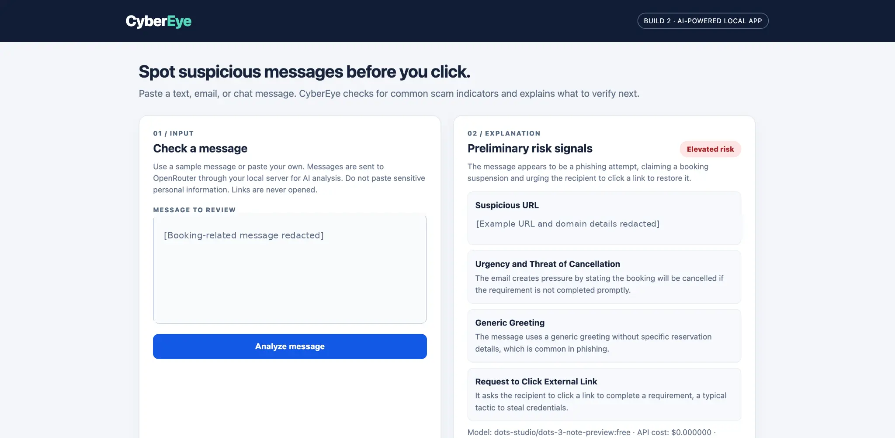

A personal cybersecurity assistant that helps people spot warning signs in suspicious messages and links before they act.
Current Status: Build 2: AI-powered analysis working locally with a real OpenRouter call. The public GitHub Pages demo remains a static preview; to run the AI workflow, launch python3 server.py locally.
Preview: Open the CyberEye interface · Run instructions: GitHub README

Who is this for? Initially, friends and NYU Stern classmates who make travel reservations or receive unexpected account, delivery, or payment messages. This is a group I can reach directly to test the workflow.
Problem: Scam messages increasingly resemble legitimate communications from familiar services. Someone may receive a message that refers to a real booking or account and directs them to a convincing-looking verification or payment page. The user has to decide quickly whether the request is authentic, often without knowing which signals to look for.
The painful "Before" workflow: A user receives a questionable text, email, or WhatsApp message, searches for the sender or domain, compares it with the official service, and tries to decide whether to open the link. This can be time-consuming and easy to get wrong, especially when the message creates urgency.
The "After" workflow with CyberEye: Instead of clicking the link, the user copies the message into CyberEye. The tool highlights suspicious language or domain patterns, explains why the signs matter, and suggests a safer way to verify the request through the official service. Its purpose is to support the user's decision, not guarantee a message is safe or malicious.
Biggest product risk: The AI may produce plausible but inaccurate phishing indicators, creating false alarms or false confidence. One real test correctly flagged the booking-cancellation pressure but also described a greeting as generic despite a personalized salutation. This demonstrates that a coherent explanation is not necessarily an accurate explanation.
How Build 2 tests the risk: A complete real-input workflow now works and returns explanations rather than just a score. This establishes technical feasibility and exposes a concrete incorrect claim. It does not yet measure sensitivity, specificity, or reliability across a test set. Those are next-step evaluation goals.
How the app works: User pastes a message into docs/prototype.html on 127.0.0.1:8000 → browser POSTs to /api/analyze → local Python server.py validates input and calls OpenRouter via HTTPS → free model returns structured JSON → server checks response fields → browser displays risk signals, uncertainty, recommended action, token usage and API cost if available. The OpenRouter API key is read from an ignored local .env file and is never sent to the browser. Messages are sent to OpenRouter for processing; the server does not fetch or open links.
Product analytics: PostHog tracks pageviews, clicks, and session replay on both the published Product Page and local app. The local app also sends analysis_started, analysis_completed, and analysis_failed events. A November 15 test confirmed activity from both github.io and 127.0.0.1; a session replay was also verified. Avoid capturing raw message content as analytics properties and confirm input masking during replay review.
Success criteria for further testing: A target user can complete an analysis and understand the independent verification step; responses should avoid unsupported claims, perform sensibly on benign examples, and stay within an affordable latency and per-run cost. Compare false positives and missed red flags across a small test set before making reliability claims.
.env, AGENTS.md setup documentation, automated backend tests, and a GitHub Actions test workflow.dots-studio/dots-3-note-preview:free, 1,610 tokens, and $0.000000 in API usage. A separate live test is required to demonstrate end-to-end functionality on the classroom laptop.analysis_started, analysis_completed, and previous analysis_failed events. Session replay was confirmed working. Raw message content should not be recorded in analytics, and replay masking should be inspected.